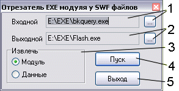
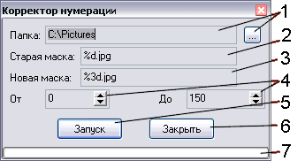
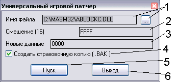
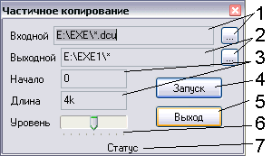
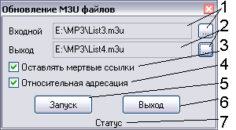
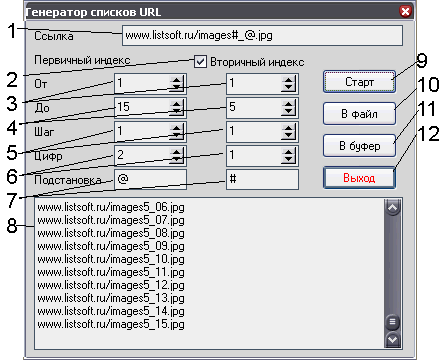
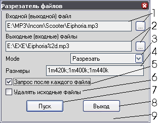

Разные операции
Версия: 1.0
Автор: Python <smisoft@rambler.ru> (c) SmiSoft (SA)
Что это такое:
Раньше плагин управления проигрывателями и разные операции находились в одном плагине.
Теперь я пришел к выводу, что их лучше разделить. Так появились плагины tar_amp и tar_misc.
Описание подробностей работы можно найти в описании соответствующих алиасов.
Алиасы:
Эти команды не используют параметров командной строки и при выполнении вызывают модальное окно.
Даже не пытайтесь выгружать TaR или плагин, пока открыто хотя бы одно окно - это приведет к фатальной ошибке.
- ~exe2swf
Отрезает исполняемый модуль у самоисполняющихся Flash мультфильмов.
Если у вас есть большая коллекция разных флеш-фильмов, а все они имеют расширение exe, то вы храните огромную пачку ненужных совершенно данных. Это проигрыватели флеш, пришитые к каждому файлу. Отрезав эти модули, вы сэкономите около 800 килобайт от каждого файла. Вы можете извлечь и собственно исполняемый модуль, используя переключатель.
Последние использованные строки хранятся в INI файле с именем, как у плагина.

- Входной файл. Справа - кнопка выбора файла, прямое редактирование поля запрещено. Файл должен обязательно быть исполняемым (расширение .EXE), иначе алгоритм может работать неверно.
- Выходной файл. Справа - кнопка выбора файла, прямое редактирование поля запрещено. Файл не должен существовать. Его расширение должно быть .swf, чтобы Flash проигрыватель мог его правильно воспроизводить.
- Панель выбора режима работы. В зависимости от положения переключателя, автоматически генерируется имя выходного файла при выборе входного. При смене положения переключателя имя автоматически меняется - следите за этим!
- Кнопка запуска преобразования. При работе могут выводиться диагностические сообщения. Формат входного файла выясняется автоматически, что может привести к недоразумениям. В любом случае, генерируется выходной файл, даже если его формат некорректен. Я рекомендую просматривать все выходные файлы. Если файл не может быть преобразован, можете прислать мне ссылку на его источник в Интернете, но ни в коем случае не сам файл, нечего засорять мой почтовый ящик. Запуск преобразования также произойдет по кнопке Enter в полях ввода.
- Выход из программы с сохранением состояния. Также выход осуществляется по кнопке Esc.
- ~renumber
Изменение режима нумерации файлов
Команда предназначена для изменения числа значащих цифр в упорядоченных по номерам файлах (не по алфавиту!)
Например, пусть у Вас есть 100 файлов с именами file1 file2 ... file10 ...
Будут ли они упорядочены по номерам в каком либо менеджере? Конечно нет! (Исключение - Windows XP explorer)
Тогда запускаем плагин, ищем каталог, в котором лежат проблемные файлы, вводим параметры и все!
Нажимаем ОК, ждем и получаем результат. Защит от дурака нет, использование последними не предполагается.

- Входная папка. Справа - кнопка выбора папки, прямое редактирования имени папки невозможно. Поскольку используется стандартная функция, то перевода этого диалога не предусмотрено. Папка должна существовать.
- Начальное имя файлов. Здесь следует написать имя файла с номером в виде %nd, где n - минимальное число
значащих цифр (например, 001 - 3 значащие цифры). Если вам требуется пронумеровать файлы (то есть преобразовать
a.jpg, b.jpg в 001.jpg, 002.jpg..., то вы не по адресу - для этого существует много других программ, либо
можно воспользоваться встроенной в Total Commander утилитой по пакетному переименованию файлов).
- Конечное имя файла. Пишется в таком же виде, как и старое имя, только чтобы n было не меньше числа значащих
цифр в номере последнего файла. Если захотите вернуть все на старое место, поменяйте местами старое и новое
имя и проведите повторное преобразование.
- Границы преобразования. То есть в таких пределах будет проходить обработка. Строго говоря, пределы можно
указывать неточно - несуществующие файлы пропускаются без проблем, так что если у вас есть только файлы 1.jpg и 2.jpg
и вы преобразуете их в 001.jpg и 002.jpg, то можете оставить границы по умолчания (от 0 до 1000), все пройдет
как надо, только будет затрачено больше времени. Кроме того, если у вас есть 5000 файлов и вы проводите их преобразование
к 4-хзначному номеру, то вовсе не обязательно указывать границы от 0 до 5000 - достаточно указать границы от 0 до
999 (файлы с номерами 1000 и выше уже преобразованы к 4-хзначному номеру), хотя можно указать и весь диапазон -
ничего страшного (кроме непродуктивной потери времени) не произойдет.
- Запуск преобразования. Все было подробно описано ранее. Запуск также можно произвести по нажатию Enter в
полях ввода.
- Выход из программы с сохранением данных. Также можно выйти по кнопке Esc.
- Прогресс-бар. Показывает, какая часть задания уже выполнена. При работе "вхолостую" (когда преобразуемые
файлы не существуют) движется быстрее, так что точно оценить время работы нет возможности. Впрочем, как
пользователи Windows вы уже к этому наверняка привыкли...
- ~patch
Модификация файла вместо шестнадцатеричного редактора
Иногда требуется очень быстро что-то исправить в файле игры (например, по рекомендации из журнала -
как сделать себя бессмертным и т. п.), а шестнадцатеричного редактора нет под рукой. Тогда используем мой плагин,
переписываем сюда параметры из журнала (вообще, алгоритм родился, когда потребовалось СРОЧНО ввести чит в игру,
а чит был в виде совета: запишите в файл такой-то по такому-то смещению такие-то байты).

- Выбор файла для модификации. Справа - кнопка выбора файла, руками его менять нельзя. Имя берете из описания
того патча, который требуется применить. Файл не должен быть только для чтения!!!
- Смещение в шестнадцатеричном формате без лидирующих 0x и $. Берете опять таки из описания.
- То, что требуется записать по указанному адресу. Тоже из описания.
- Нужно ли создавать резервную копию. Если что - сможете восстановить оригинальный файл и продолжить эксперименты.
- Начало преобразования. Также можно запустить по Enter из полей редактирования.
- Выход с сохранением параметров. Можно также выйти по нажатию Esc.
- ~pcopy
Частичное копирование - аналог утилиты PieceCopy, с исходным кодом
Иногда требуется скопировать файл не полностью, а частично, например, только первые 100 байт.
Это может оказаться полезным, если нужно показать свою многогигабайтовую коллекцию MP3 приятелю, но
она находится на жестком диске, а писать кучу болванок - глупо.
Поначалу, мне потребовалось испытать генератор инсталляшек, приходилось несколько раз компилировать
скрипт, а при этом инсталлятор (кстати, Inno Setup) архивировал все файлы (почти 500 Мб, или 15 минут
работы на моей машине). Мне это надоело и я создал это чудо, так как вся программа (кстати, Unreal Tournament)
"улеглась" в пару мегабайт. Эти файлы сжимались за несколько секунд и я смог отладить скрипт не теряя нервов.
Через несколько месяцев аналогичная участь постигла и Null Installator - ему тоже пришлось быстро сжимать заглушки.

- Имя входного файла. Справа - кнопка выбора файла, но его можно ввести и вручную. Во входном имени разрешено
использовать маски. Поиск будет осуществляться на заданную глубину (см. пункт 6). При этом в конечном
каталоге структура каталогов будет зеркально отображена (то есть нельзя указывать начальный и конечный
каталог одинаковыми, или чтобы конечный каталог лежал внутри начального - это приведет к сбою). Маски такие
же, как при поиске в операционной системе по F3 или в Norton Commander по Alt-F7.
- Имя выходного файла. Справа - кнопка выбора, но можно задать вручную. Каталог выходных файлов не должен
лежать внутри каталога для входных файлов - иначе произойдет неконтролируемое заполнение дискового пространства
обрезками файлов и выходной каталог придется полностью удалить. В имени выходного файла также разрешены
маски следующего вида:
- * или *.* - заменяется на реальное имя обрабатываемого файла с расширением
- *.ext - заменяется на имя файла с расширением .ext
- name.* - заменяется на файл name с прежним расширением
- {filename} - заменяется на полное имя файла
- {filename i1} - заменяется на кусок имени файла, начиная с i1 позиции
- {filename i1 i2} - заменяется на кусок имени файла с i1 позиции длины i2
- {name}, {name i1}, {name i1 i2} - то же, но только для имени файла (без расширения)
- {ext}, {ext i1}, {ext i1 i2} - то же самое, но для расширения (с точкой)
- Начало и длина - смещение, откуда начинается копирование блока и его длина. Можно указывать размер
таким образом: ...g...m...k... - соответственно, число гигабайт, мегабайт, килобайт и байт. Дробные доли
(вроде 1.44 Mb) не поддерживаются (но можно записать вроде 1M450K). Регистр не имеет значения.
Можно использовать пробелы, но только в целях улучшения читаемости - алгоритмом пробелы игнорируются.
- Осуществляет преобразование. Во время работы в строке статуса (см. пункт 7) отображается состояние программы.
После завершения преобразования, статус сбрасывается. Преобразование можно остановить кнопкой "Стоп". Однако
это не вызовет сиюсекундного завершения работы, сперва закончится копирование последнего файла, что при большом
размере заглушки (и в зависимости от скорости носителя) может занять несколько секунд. Также преобразование
запускается кнопкой Enter из полей редактирования.
- Выход из программы с сохранением данных. Также можно выйти по кнопке Esc.
- Максимальный уровень вложенности каталогов. В самом левом положении - нулевой (подкаталоги не рассматриваются).
Самая правая позиция - глубина вложенности 8, соответствует стандарту ISO. Использование позволяет задать
конечный каталог внутри начального (используйте осторожно!).
- Строка статуса. Показывает состояние программы, или имя обрабатываемого файла. Когда программа ничем не
занята, показывает строку "Статус" (зависит от файла перевода!)
- ~m3ufresh
Обновление ссылок в M3U файлах (в таком формате хранятся плейлисты в Winamp и других проигрывателях)
Если Вы имеете много playlist'ов (например, созданных в WinAmp), но произвели перекомпоновку файлов по
другим каталогам, то эта утилита поможет быстро восстановить правильные ссылки. Программа просто ищет первый
файл с таким же именем, что и отсутствующий и пишет ссылку на этот файл в playlist. Естественно, при
переименовании файлов данная утилита не поможет.
Пример: ряд файлов MP3 разных исполнителей лежали в одном каталоге. Для них было создано некоторое
количестово playlist'ов. Потом файлы разложили в каталоги (по исполнителям, например, а может, по альбомам),
но не переименовывали. Естественно, playlist'ы стали некорректными, WinAmp не может найти файлы, а потому и
не воспроизводит их.
Если есть несколько файлов с одинаковым именем, то программа выбирает первый найденный (читай: последний
созданный).

- Входной плейлист. Справа - кнопка выбора входного файла, выбор вручную запрещен. Должен быть создан либо
вручную, либо в Winamp. Работа с другими типами плейлистов не гарантируется. Файл должен существовать.
- Выходной плейлист. Справа - кнопка выбора выходного файла, выбор вручную запрещен. При удалении "мертвых"
ссылок (пункт 3) удаляется только строка с файлом, комментарий (как правило, содержащий расширенную
информацию о файле) остается. Поэтому после обработки файла таким образом я настоятельно рекомендую
открыть полученный файл в WinAmp (или аналогичной программе), обновить информацию и сохранить файл.
- Если помечен, то ссылки на файлы, не найденные в каталогах будут сохранены, иначе - удалены.
- Если помечен, то ссылки на файлы будут относительно каталога, в котором находится плейлист, иначе -
полный путь (с диском и всеми каталогами). Сетевые (UNC) имена не поддерживаются.
- Запуск преобразования. Процесс можно прервать в любой момент, но он не прекратится сию секунду, программа
должна доискать последний обрабатываемый файл. Если процесс прерван пользователем, выходной файл не сохраняется.
Также преобразование можно запустить по кнопке Enter из полей редактирования.
- Выход из программы с сохранением состояния. Также можно выйти по кнопке Esc.
- Строка статуса - показывает, какой файл сейчас обрабатывает программа, или строку "Статус" - признак готовности.
- ~BookGen
Помощь при печати книжек в Word практически любой версии
- ~BookGen2
Помощь при печати книжек в ACDSee
- ~Id3Copy
Копирование и изменение тегов ID3
- ~Txt2htm
Преобразование текстовых таблиц в таблицы формата HTML
- ~ListGen
Создание списка существующих файлов
- ~ListGen2
Создание списка URL для загрузки в менеджере загрузок
Просто укажите необходимые параметры и нажмите кнопку "Старт". Если менеджер
запущен и поддерживает добавление из буфера, нажмите кнопку "В буфер", иначе
нажмите "В файл" и экспортируйте список в менеджер.

- Укажите здесь ссылку, где необходимые номера заменены на указанные ниже символы.
- Если необходимо использовать двойную нумерацию
- С какого номера следует начинать генерацию последовательности
- И на каком ее следует заканчивать
- С каким шагом генерировать
- Сколько цифр в записи использовать. Впереди будут подставлены нули.
- Какую строку следует заменять на данный индекс.
- Генерируемая последовательность. Нажмите кнопку "Старт" и получите!
- Запускает генерацию. Также запускается по Enter из полей редактирования.
- Сохраняет сгенерированную последовательность в указанный файл
- Сохраняет последовательность в буфер обмена.
- Просто выход. Параметры сохраняются. Можно выходить по Esc.
Обратите внимание: первичный индекс изменяется быстрее, чем вторичный (когда используется вторичная индексация).
- ~FileCut
Разрезает файл на части указанного размера

- Входной файл. Справа - кнопка для выбора, ручное редактирование запрещено.
Обратите внимание, файл является входным для операции разрезания и выходным -
для операции слияния!
- Выходной файл. Справа - кнопка для выбора. Обратите внимание, в имени выходного
файла обязательно должен присутствовать спецсимвол %nd, где n - число символов
в номере (например, 001 - три символа). Если этого не сделать, последующие
файлы перезапишут предыдущие. Исключение - если вы генерируете последовательность
сразу на съемные носители, тогда можно не использовать этот символ (но вы не сможете
проконтролировать правильность сборки). Обратите внимание, файлы являются
выходными для операции разрезания и входными для операции слияния.
- Режим работы - сборка или разборка. В зависимости от выбора, изменяется
вид элемента 4.
- Параметры работы.
- Для разрезания - размеры кусков через точку с запятой. Если размер
файла превосходит сумму указанных размеров, то остальные файлы будут иметь
последний указанный размер (например, 1m440k в нашем случае).
- Для слияния - номера кусков, подставляемые в маску. Куски могут указываться
как номера или промежутки через запятую, например 1,2,5-8 означает
набор 1,2,5,6,7,8. Вы божете указывать номера в произвольном порядке, даже
8,7,6,5,4,3,2,1, но вы должны быть уверены, что делаете то, что
надо. Если список пуск, то программа пытается автоматически угадать его,
пытаясь найти первый сплошной промежуток файлов с указанной маской. Эту
методику можно применять, если файлы созданы этой же программой, а куски
лежат на диске.
- Для слияния по списку - имя файла списка. Справа - кнопка для выбора.
В файле должны быть перечислены все объединяемые файлы, каждый файл -
на новой строке. Пустые строчки и строчки, начинающиеся с символа ; игнорируются.
- Если установлен, то перед записью/чтением каждого куска выдается запрос.
Полезно, если вы осуществляете запись/чтение непосредственно со съемныых
носителей - у вас есть время, чтобы сменить его.
- Если вы работаете со съемными носителями, то лучше этот флаг не устанавливать -
дискеты обычно довольно ненадежны. Но если вы объединяете файлы с жесткого
диска, то этот флаг может быть установлен.
- Запуск процесса обработки. Также может быть запущен по нажатию Enter в
полях ввода.
- Выход. Также можно выйти по Esc.
- Строка статуса. В ней отображается имя текущего файла. Прогресс пока не
отображается, может, в другой версии...
- В последней версии появилась возможность создавать BAT файл (идея взята из
программы Katarn's File Cutter) - программа создает BAT файл с именем, как
маска (но без номера). Если сложить все файлы в один каталог и запустить
его, то будет создан исходный файл. Входные файлы не удаляются.
Особенности:
- Для хранения личной информации плагин использует тот же INI файл, в котором хранится языковая информация. Поэтому при установке следует выбрать сразу INI файл с тем языком, с каким впоследствие придется работать. Если INI файл не найден, или не найдены соответствующие константы, то будет использоваться английский язык. В INI файле по умолчанию используется русский язык.
История:
[+] Новая фича
[*] Пофиксен баг
[-] Убрана фича
Версия 1.0 - 08.07.05
[+] Поскольку плагин был переименован, нумерация версий вновь с нуля. Точнее, с единицы
Версия 1.1 - 10.07.05
[+] Новый алиас ~FileCut